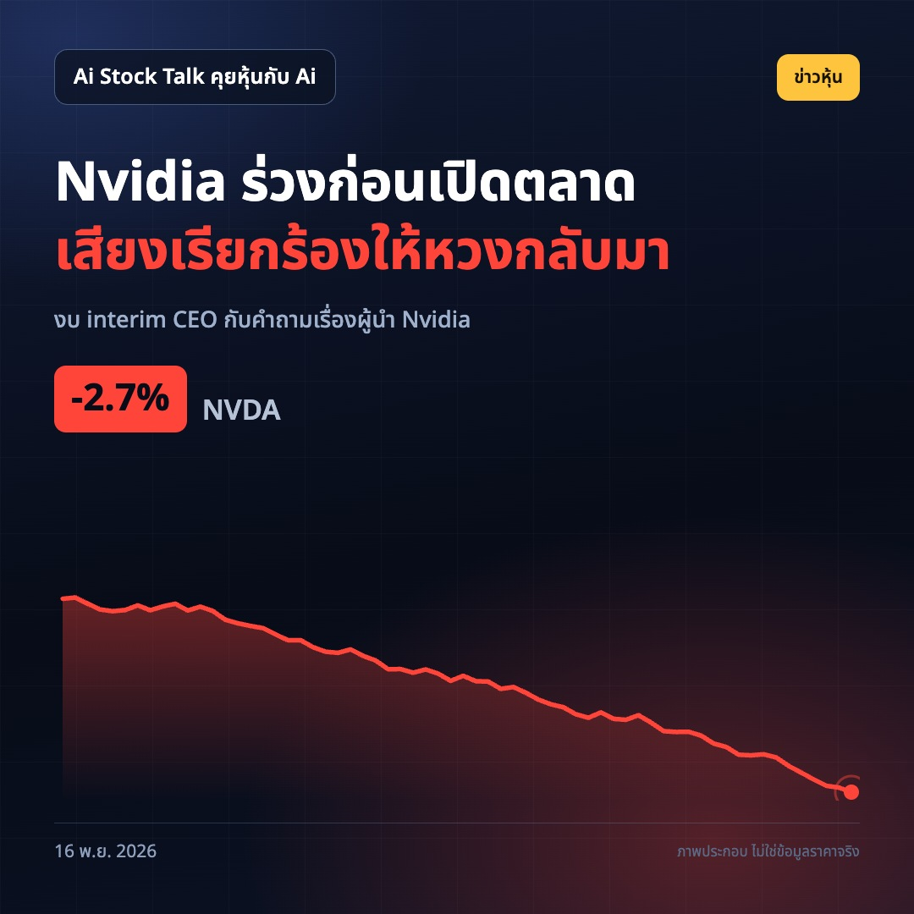

1. Nvidia ร่วงก่อนเปิดตลาด เสียงเรียกร้องให้เจนเซน หวง กลับมาดังขึ้น

หุ้น Nvidia ร่วง 2.7% ในตลาดพรีมาร์เก็ตวันจันทร์ หลังนักลงทุนเริ่มคิดราคาผลกระทบจากการลาออกของเจนเซน หวง เสียงเรียกร้องให้เขากลับมาเป็นซีอีโอกำลังดังขึ้น ทั้งจากผู้บริหารบริษัทเทคและผู้ถือหุ้นรายใหญ่ ขณะที่ Colette Kress ซีอีโอชั่วคราวต้องรายงานผลประกอบการครั้งแรกหลังหวงอำลา ฝั่งนักวิเคราะห์ยังให้ราคาเป้าหมายกลางที่ 280 ดอลลาร์ สูงกว่าราคาปัจจุบันมาก สะท้อนว่าตลาดยังแยกเรื่องคนคุมบริษัทออกจากกำลังซื้อชิปที่ยังแข็ง ทำไมต้องสน: คนไทยที่ถือหุ้นสหรัฐหรือกองทุนเทคโนโลยีควรจับตางบสัปดาห์นี้กับข่าวการกลับมาของหวง เพราะสองเรื่องนี้จะบอกทิศทางหุ้นชิปทั้งกลุ่ม ถ้าต้องเลือก คุณอยากให้หวงกลับมาเป็นซีอีโอ หรือให้บอร์ดเลือกคนใหม่ที่มาจากสายปฏิบัติการ? ที่มา: https://www.cnbc.com/2026/11/16/nvidia-stock-price-jensen-huang.html